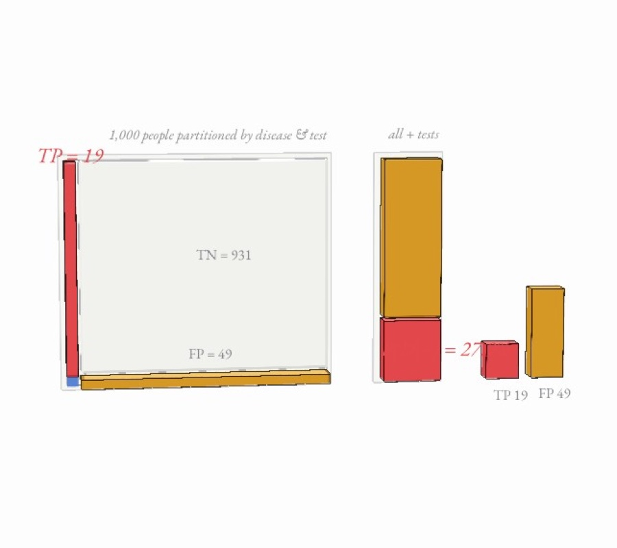
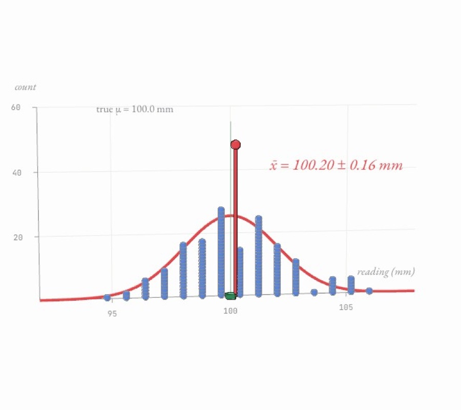
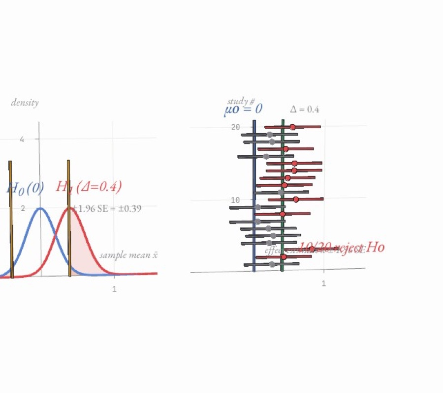

No. 01explorer
Where 500 balls land
coin tosses add up to a bell
No. 02explorer
Why a 95 % accurate test can still be mostly wrong
base rates, false positives and Bayes’ rule
Chance as experiments you can run, and try to break


